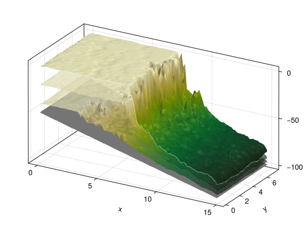

Topography Plots
We have two kinds of topography plots available.
- Contour map: good for inspecting the morphology of atolls or small island chains.
- Glamour view: a 3D surface plot. Good for getting a quick overview of the quality of your run, for instance to see if there are no unphysical spikes in the output. Otherwise mostly here for aestethic purposes, which is why it is called
glamour_view.
Contour Map
TODO: This code is not yet available in CarboKitten.Visualization, but you can copy paste this for now.
function topography!(ax, header, data; colormap=:nuuk, levels=[-10, -5, 0, 5, 10])
ax.aspect = DataAspect()
h = header
s = data.sediment_thickness[:, :, end]
t = h.initial_topography .+ s .- ((h.axes.t[end] - h.axes.t[1]) * h.subsidence_rate)
hm = contourf!(
ax,
h.axes.x |> in_units_of(u"km"),
h.axes.y |> in_units_of(u"km"),
t / u"m", levels=levels, colormap=colormap, extendlow=:auto, extendhigh=:auto)
contour!(
ax,
h.axes.x |> in_units_of(u"km"),
h.axes.y |> in_units_of(u"km"),
t / u"m", levels=levels, color=:black, labels=true)
return hm
endGlamour View
Not very useful but highly glamourous.

Test 1: CAP Output
file:examples/visualization/glamour_view.jl
#| creates: docs/src/_fig/glamour_view.png
#| requires: data/output/cap1.h5
#| collect: figures
module Script
using GLMakie
using CarboKitten.Export: read_volume
using CarboKitten.Visualization: glamour_view!
using HDF5
function main()
fig = Figure()
ax = Axis3(fig[1,1])
header, volume = read_volume("data/output/cap1.h5", :topography)
glamour_view!(ax, header, volume)
save("docs/src/_fig/glamour_view.png", fig)
end
end
Script.main()Test 2: Single Slice Output (issue 196)

file:examples/visualization/glamour_view_single.jl
#| creates: docs/src/_fig/glamour_view_single.png
#| collect: figures
module Script
using GLMakie
using CarboKitten
using CarboKitten.Visualization: glamour_view!
using HDF5
const PERIOD = 200.0u"kyr"
const AMPLITUDE = 4.0u"m"
const FACIES = [
CAP.Facies(
viability_range = (4, 10),
activation_range = (6, 10),
maximum_growth_rate = 500u"m/Myr",
extinction_coefficient = 0.8u"m^-1",
saturation_intensity = 60u"W/m^2"),
CAP.Facies(
viability_range = (4, 10),
activation_range = (6, 10),
maximum_growth_rate = 400u"m/Myr",
extinction_coefficient = 0.1u"m^-1",
saturation_intensity = 60u"W/m^2"),
CAP.Facies(
viability_range = (4, 10),
activation_range = (6, 10),
maximum_growth_rate = 100u"m/Myr",
extinction_coefficient = 0.005u"m^-1",
saturation_intensity = 60u"W/m^2")
]
const INPUT = CAP.Input(
tag = "cap1",
box = CarboKitten.Box{Coast}(grid_size=(100, 50), phys_scale=150.0u"m"),
time = TimeProperties(
Δt = 200.0u"yr",
steps = 1000),
output = Dict(
:topography => OutputSpec(write_interval = 1000),
:profile => OutputSpec(slice = (:, 25))),
sea_level = t -> 4.0u"m" * sin(2π * t / 0.2u"Myr"),
initial_topography = (x, y) -> - x / 300.0,
subsidence_rate = 50.0u"m/Myr",
insolation = 400.0u"W/m^2",
facies = FACIES)
function main()
fig = Figure()
ax = Axis3(fig[1,1])
out = MemoryOutput(INPUT)
run_model(Model{CAP}, INPUT, out)
glamour_view!(ax, out.header, out.data_volumes[:topography])
save("docs/src/_fig/glamour_view_single.png", fig)
end
end
Script.main()Implementation
file:ext/GlamourView.jl
module GlamourView
import CarboKitten.Visualization: glamour_view!
using CarboKitten.Utility: in_units_of
using CarboKitten.Export: Header, DataVolume
using Makie
using HDF5
using Unitful
function glamour_view!(ax::Makie.Axis3, header::Header, data::DataVolume; colormap=Reverse(:speed))
x = header.axes.x[data.slice[1]] |> in_units_of(u"km")
y = header.axes.y[data.slice[2]] |> in_units_of(u"km")
xy_aspect = x[end] / y[end]
ax.aspect = (xy_aspect, 1, 1)
ax.azimuth = -π/3
n_steps = size(data.sediment_thickness, 3)
grid_size = (length(x), length(y))
steps_between = 2
selected_steps::Vector{Int} = if n_steps > (2 + steps_between)
[1, ((1:steps_between) .* n_steps .÷ (steps_between + 1))..., n_steps]
else
collect(1:n_steps)
end
bedrock = header.initial_topography .- (header.axes.t[end] - header.axes.t[1]) * header.subsidence_rate
result = Array{Float64, 3}(undef, grid_size..., length(selected_steps))
for (i, j) in enumerate(selected_steps)
result[:, :, i] = (data.sediment_thickness[:,:,j] .+ bedrock) |> in_units_of(u"m")
end
surface!(ax, x, y, result[:,:,1];
color=ones(grid_size),
colormap=:grays)
for s in eachslice(result[:,:,2:end-1], dims=3)
surface!(ax, x, y, s;
colormap=(colormap, 0.7))
end
surface!(ax, x, y, result[:,:,end]; colormap=colormap)
lines!(ax, x, zeros(grid_size[1]), result[:, 1, end]; color=(:white, 0.5), linewidth=1)
lines!(ax, fill(x[end], grid_size[2]), y, result[end, :, end]; color=(:white, 0.5), linewidth=1)
end
function glamour_view(header::Header, data::DataVolume; colormap=Reverse(:speed))
fig = Figure()
ax = Axis3(fig[1, 1])
glamour_view!(ax, header, data, colormap=colormap)
return fig, ax
end
end